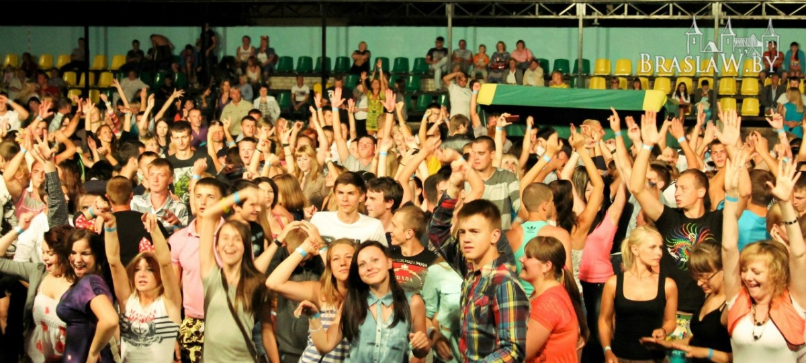
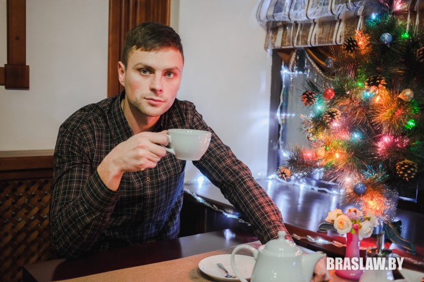

Организатор Viva Braslav Евгений Лабуть: главное не распыляться сразу на все

«Viva Braslav» - самый известный в нашем регионе, и один из самых масштабных в Республике Беларусь, фестиваль. В 2015 году он проводился уже в третий раз, и собрал более 9.000 человек (к примеру, население Браслава около 9.500). Это мероприятие полюбилось музыкантам, спортсменам, туристам и вообще всем, кто любит активно проводить время летом. «Вива» в каком-то смысле стала визитной карточкой города, и с каждым годом притягивает все больше людей. Об истории фестиваля, особенностях его планирования и подводных камнях сегодня мы поговорим с одним из его организаторов – Евгением Лабутем.
- Добрый вечер, Женя. Расскажи, пожалуйста, немного о себе. Где учился, работал и как угораздило создать такой грандиозный фестиваль?
- Привет. Окончил я БГУ ФК по специальности «менеджмент в туризме» – заметь, деятельность весьма схожая с организацией мероприятий. Потом 5 лет проработал в отделе спорта и туризма (сейчас отдел образования, спорта и туризма Браславского райисполкома – ред.), где тоже решалось много организационных вопросов, поэтому какой-то опыт на момент запуска первого фестиваля у меня уже был. К тому же помогал дружный и слаженный коллектив. Вообще, на сегодняшний день фестиваль, наверное, стал моим главным хобби. Возможно, когда-то это перерастет в профессиональный вид деятельностиJ
- Расскажи про первую «Виву». Как получилось собрать такое количество людей в одном месте?
- В каком-то смысле первый фестиваль задал для нас последующий вектор развития. Да и фестивалем это едва ли можно было назвать, скорее дискотека на открытой площадке. Но признаюсь, что такого ажиотажа мы не планировали. Сами были удивлены, когда узнали, что вместо рассчитанных 500-600, было продано более 1000 билетов, а за час до старта музыкальной части не всем их даже хватило. «Разгневанный люд» толпился у входа на стадион, поэтому в итоге после 23.00 вход был свободный. Кстати, как тогда у нас не задалось со входом, так и два следующие фестиваля в этом плане имели проблемы. То какие-то гигантские очереди, то проблемы с электронными сканерами, у которых обрывалась связь. Но все равно каждый раз уделяем этому максимум внимания.

- В чем ты видишь смысл фестиваля, на кого он рассчитан? И кстати, почему именно это название?
- Знаешь, изначально планировалось мероприятие-своеобразный микс спорта и музыки на конкурсной основе (вспомни, на первой «виве» конкурс молодых исполнителей). Хотелось провести что-то необычное для Браслава, чтобы это были не банальные соревнования и дискотека, а что-то более масштабное. Кстати, был вариант провести фестиваль в рамках «Браславских зарниц», но мы все же решили сделать независимое мероприятие. Как видишь, народу очень понравилось. И нам тоже (смеется).
Насчет названия…О. это было непросто. Думали с коллегами долго, и ничего путного в голову не приходило. Почему-то все крутилось вокруг слов «виват, вива». В итоге остановились на «Viva Braslav!» Хотя и не всем нравилось это название, но когда потом мы услышали, как народ скандирует в голос ди-джеям «Вива Браслав!», то поняли, что вот оно, и трогать больше его не стали.
- Интересно узнать, а почему именно ребята из Аплюс?
В то время мы довольно неплохо знали это радио, слушали их музыку, и нам нравилось. Поэтому обратились, договорились, а потом…ди-джеям очень понравилась наша публика, и в следующем году они приехали уже усиленной командой. Но только на Аплюс наше сотрудничество не замыкается. В 2015 году мы шагнули к выбору зарубежных артистов, но тут появляется одна проблема. К сожалению, всегда приходится думать о соотношении цена-качество. Нам хочется, чтобы людям нравилось то, что мы делаем, и чтобы это, к тому же, было недорого. Поэтому стараемся здраво рассуждать о бюджете мероприятия, ищем баланс.

- Как насчет второго фестиваля? Планка поднялась выше?
- Однозначно. Я видел европейские фестивали, и понимаю, что расти можно бесконечно, поэтому стараемся дорабатывать вопросы в отдельных областях. Так, у меня есть блокнот, в котором на каждой страничке по максимуму расписаны все вопросы, с которыми нужно разобраться. Всегда появляется много мыслей насчет фестиваля. Иногда что-то интересное слышишь от окружающих тебя людей, или по телевизору. И тогда пробуем все такие идеи пропускать через браславскую призму. Проходит не все, но есть к чему стремится (улыбается).
Кстати, главный наш принцип – не распыляться сразу на все. Пусть какие-то вопросы будут не учтены, но главное проработать основу, а в будущем доберемся и до них. Да, и еще очень важная вещь – люди, с которыми работаешь. В команде работать всегда легче, можно максимально оперативно решать все вопросы. Отдельный момент, о котором надо помнить – делать не только то, что нравится тебе, но в первую очередь думать о том, чтобы это было интересно всем.

- Женя, а что самое сложное в организации? Какие моменты тебе больше всего запомнились?
- Самое сложное… Знаешь, если возникают какие-то сложности с оборудованием или, например, подводит погода – то это еще не самое страшное, а вот если люди не соблюдают договоренности без каких-то видимых причин, то это плохо, и иногда очень раздражает. Но надо понимать, что это жизнь, без этого не обходилось и вряд ли когда-нибудь что-то получится идеально. Просто нужно всегда быть готовым абсолютно ко всему, продумывать запасные пути.
Моментов запомнилось огромное количество. И позитивных, и не очень. Вот например: около пяти утра, последняя ночь перед фестивалем, всю неделю почти не спали, у меня есть три часа, чтобы немного отдохнуть. Только кладусь спать, звонок «Женя, сцену установили, мы спать, кто покараулит три часика?» Этот момент не учли, поэтому в итоге поехал караулить сам.
На третьей «Виве» было немного страшно, когда дождь затянулся на несколько дней, но все-таки с погодой нам повезло. Вообще мы подстраховывались на случай грозы, были готовы к аварийной эвакуации. Вопросы безопасности – это то, что мы решаем в первую очередь.
Можно сказать, что в 2015 году мы тотально проверили себя, и поняли, что морально готовы к чему-то более серьезному.
- Как к фестивалю относятся местные власти, и браславчане?
- Приятно, что районные власти помогают совместно решать важные вопросы, и вообще понимают, что это нужная вещь для нашего района. Никаких препятствий у нас не было и нет, только поддержка, а это явный плюс. Надеюсь в дальнейшем сотрудничество будет только укрепляться.
А насчет браславчан… Естественно, есть люди, которым не нравится фестиваль. Я удивляюсь выдержке жителей ул. Стадионной и Гагарина, которым пришлось пережить такие бурные ночи (улыбается). Но никогда не бывает ничего такого, что бы нравилось сразу всем.

- А как насчет пригласить гостей из зарубежья, организовать безвизовый режим, как это например делают наши соседи из Зарасая?
- Такие идеи прорабатываются. Например, в 2015 году отдел образования, спорта и туризма подал список на область, в котором есть мероприятия, на которые иностранные граждане могли бы приезжать без виз. Правда, пока неясно, когда это выльется в реальность.

- Последняя «Вива» собрала около 9000 человек. Скажи, а какой максимум может вместить площадка на пляже?
- Сложный вопрос. Никаких точных нормативов тут нет, размер площадки мы определяем с Браславским РОВД и витебским ОМОНом. Мы говорим, сколько приблизительно планируем людей видеть на фестивале, они говорят, какая должна быть территория.
Кстати, в этом году по этой теме есть несколько смелых мыслей. Пока рано говорить что-то конкретное, но в будущем очень хотелось бы вырасти до 2 дней, организовать палаточный городок. В этом году нам помогала браславская турбаза. К сожалению, теперешняя площадка не совсем удобна для таких планов, потому что там проходит республиканская дорога, которую о-о-очень непросто перекрыть. Зарасайцам в этом смысле очень повезло с их островом.
- Женя, напоследок…ты любишь Браслав?
- Еще бы! Иначе я бы тут не жил. Тут очень классно, особенно летом. Конечно иногда хочется чего-то большего, но для этого мы и должны что то делать.
Вообще, могу сказать, что Браслав растет. За все сферы не скажу, но сфера отдыха однозначно.

- Пожелания читателям braslaw.by.
- Год обещает быть непростым, поэтому хочется пожелать, чтобы у каждого из нас была возможность заниматься любимым делом, достигая при этом максимальных результатов, а потом, конечно, всех ждет заслуженный и качественный отдых:-)
Беседовал Гальляш Сялява
Фото автора